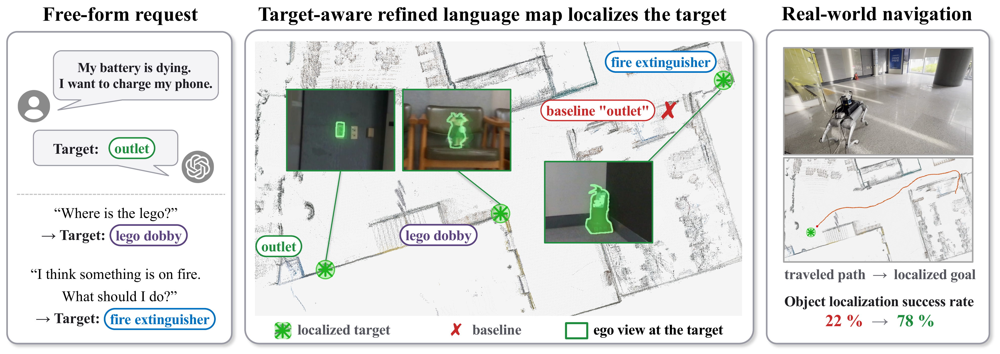
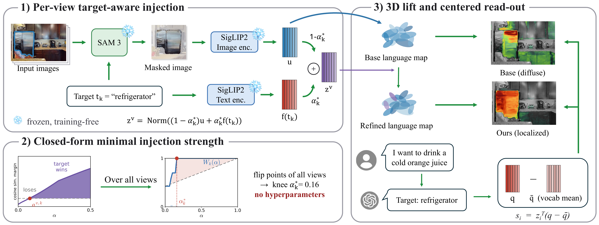
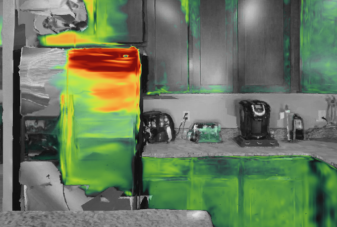
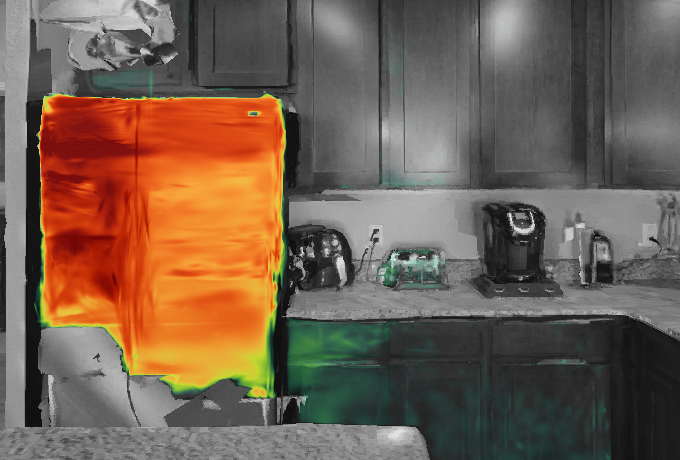
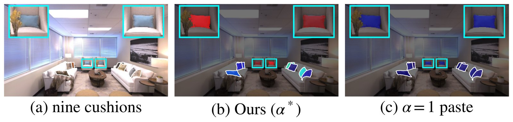

Real-World Navigation Demo
“I need to mail this letter.” → target: post box
“I need some cash.” → target: atm machine
“Where is the caution sign?” → target: caution sign
“My battery is dying. I want to charge my phone.” → target: outlet
“Where is the lego?” → target: lego dobby
“I want to write something down.” → target: whiteboard
“I think something is on fire. What should I do?” → target: fire extinguisher
Abstract
We propose a training-free, target-aware refinement of 3D Gaussian language maps. The visual embedding inside each detected target region is blended toward the target text, with every blending coefficient obtained in closed form, and a centered read-out removes the query-agnostic bias that injection creates. The refinement roughly doubles the base mIoU on Replica, localizes language goals more reliably across three benchmarks, and transfers as a plug-in to field-based and object-level language maps. A legged robot then navigates to free-form natural-language goals on a real building floor.

Target-aware refinement makes target queries reliably localizable while the map stays open-vocabulary.
Method

1) Per-view target-aware injection · 2) Closed-form minimal strength · 3) Lift and centered read-out
Results
Open-vocab segmentation · Replica mIoU
0.21 → 0.44
Goal localization · top-1, 3 datasets
50.3 → 64.0 %
Plug-in on LangSplat · Replica mIoU
0.18 → 0.32
“Where is the refrigerator?”

Base — diffuse

Ours — localized
The raw read-out spreads over the room; the refined map lands on the target.
“Blue cushion” — appearance is preserved
